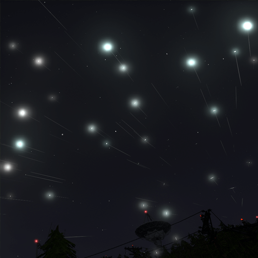
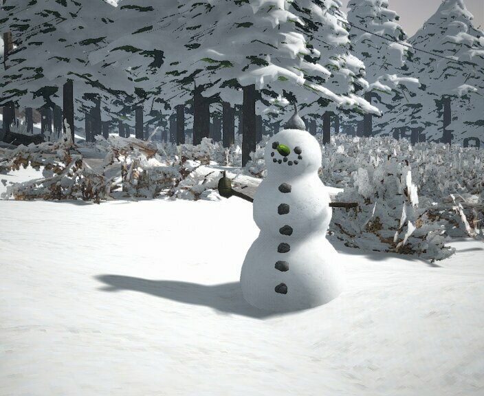

Meteor Showers
The skies out here at Dunkeltaler Forest are very clear, with very little light pollution, and we get a surprising number of meteor showers! Check the calendar for predicted future meteor showers.
Tour the Base
Take a tour of the Alpha Root Base! See a live space signal downloading and processing demonstration!

Wintertime
Dunkeltaler forest gets a lot of snow in the winter! Make a snowman, or visit one of the designated skiiing areas!